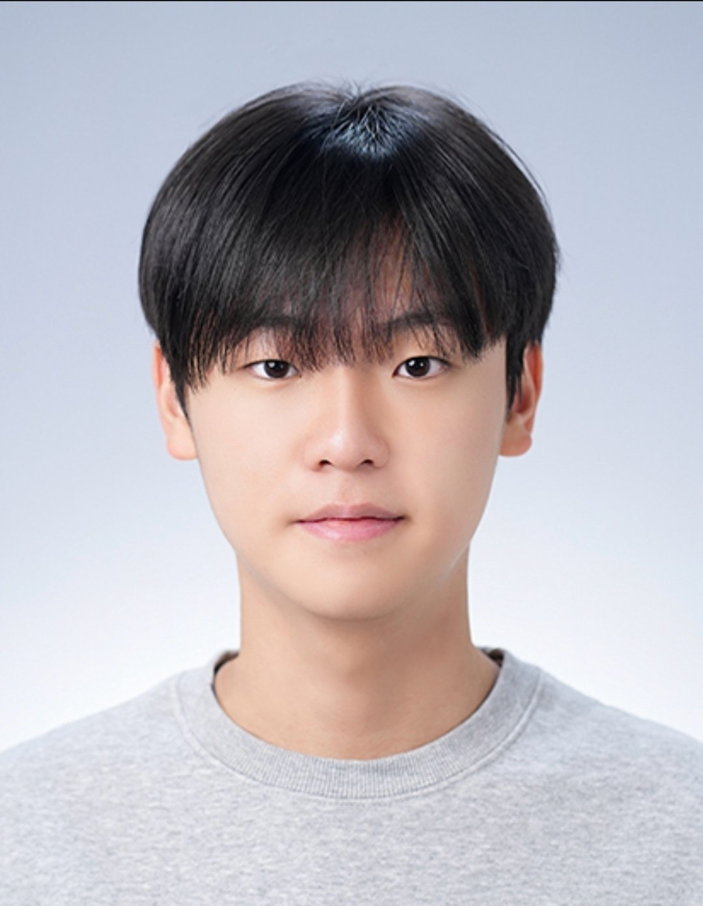
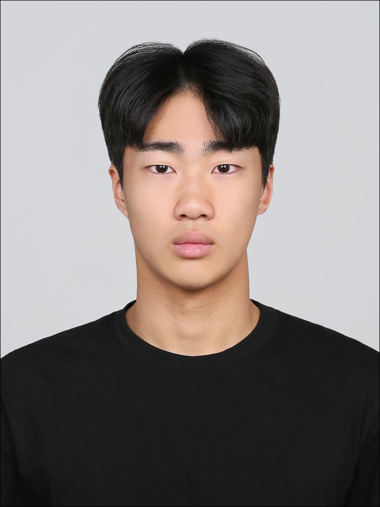

15년 경력 국어 전문가. 학생 개개인의 수준에 맞춘 1:1 맞춤형 질의응답을 제공합니다.

수시·정시를 모두 경험한 입시 전문가. 국어 내신과 수능을 동시에 잡는 전략을 제시합니다.

내신 2.78→수능 1.4 달성 / 과탐→사탐 전환 후 두 과목 1등급 / 수시→정시 전환 경험 전달

과학고 조기졸업 경험을 바탕으로 수학 및 과학 문제 풀이 전략을 중심으로 질의응답합니다.

2026 수능 수학 100점, 생명과학1 백분위 99. 실전 문제 풀이 중점 멘토링 진행.
순수 독학 내신 1점대 / 사문·정법·생윤 1등급(98,95,100) / 국어 3→1 향상
정시 현역 서울대 입학 후 재수하여 인하대 의대 진학. 수시·정시 병행 경험으로 다양한 조언 가능.

수학 올림피아드 출신. 심화 수학 문제 풀이와 개념 정리를 도와드립니다.
15년 경력 국어 전문가. 학생 개개인의 수준에 맞춘 1:1 맞춤형 질의응답을 제공합니다.

현) 수리딩어학원 10년차 대표강사. 25년의 내공, 결과로 증명하는 압도적 강의. 대원외고·대일외고 등 20년 이상 전문 과외.
유
2024 수능 수학(미적분) 백분위 98. 꾸준한 우상향 내신으로 성적 상승 전략을 지도합니다.
www.kmsongdo.store